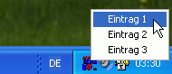

TRAYMENU
TRAYMENU
TRAYMENU
TRAYMENU
| Syntax: | TRAYMENU Auswahl = Hilfstext, Elementenliste |
| Beschreibung: | Zeigt ein Programm-Menü als Icon in der Windows-Taskleiste an, aus dem der Benutzer via Rechtsklick ein Menü anzeigen lassen und einen Menüpunkt auswählen kann. Als Parameter erwartet diese Funktion einen Hilfstext, der als Tooltip angezeigt wird, sobald die Maus über das Tray-Icon bewegt wird, sowie eine Liste an Elementen, die zur Auswahl im Menü angezeigt werden. Jedes Element wird dabei durch das in der Variablen [std_sep] definierte Separationszeichen getrennt, dies ist normalerweise das Pipe-Zeichen (|). Rückgabewert der Funktion ist der gewähle Menüpunkt. Klickt der Benutzer das Icon mit der linken Maustaste an, wird ein Leerstring zurückgegeben.  |
| Beispiele: | traymenu [menu] = 'Was möchten Sie essen?', 'Pizza|Pommes Frites|Döner|Hamburger|Hot Dog' if [menu] ! '' echo 'Ihre Auswahl lautet: ' # [menu] else echo 'Sie haben keine Auwahl getroffen.' endif |
| Bemerkungen: | In dem Menü, was beim Rechtsklick angezeigt wird, können auch Shortcuts definiert werden, die durch Tastendruck angesteuert werden können. Um einen Shortcut-Key zu definieren, schreiben Sie einfach ein &-Zeichen vor das jeweilige Element, z.B. "B&eenden". Hier wird das "e" unterstrichen dargestellt und kann mit ALT+e ausgewählt werden. Im Menü kann auch eine Trennlinie angegeben werden, geben Sie dazu einfach einen Bindestrich (-) als Element in der Liste an. Das Icon kann global für alle Dialoge über die Variable [app_icon] auf eine externe .ICO-Datei gesetzt werden. |